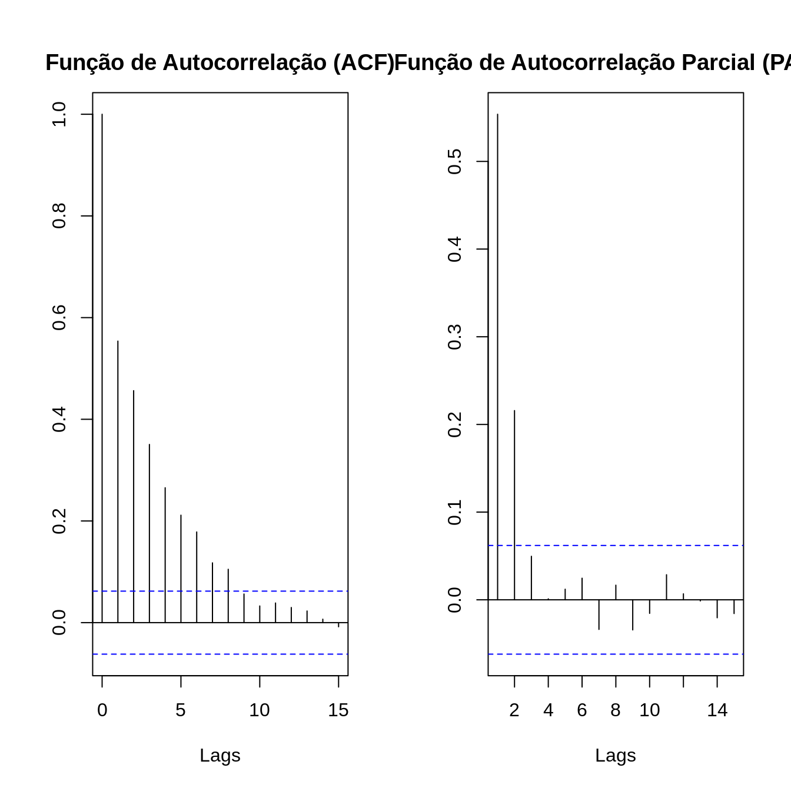
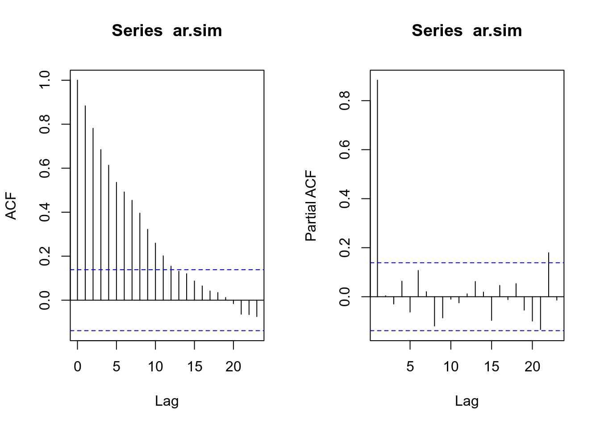
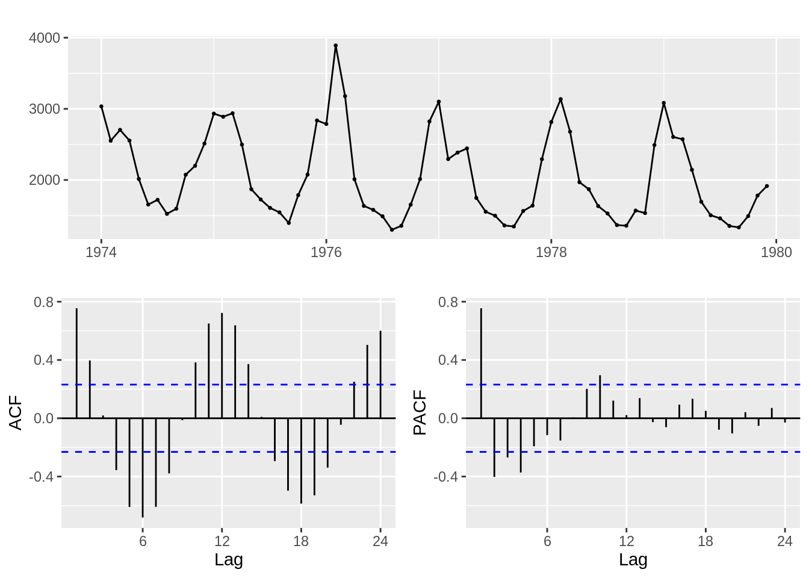
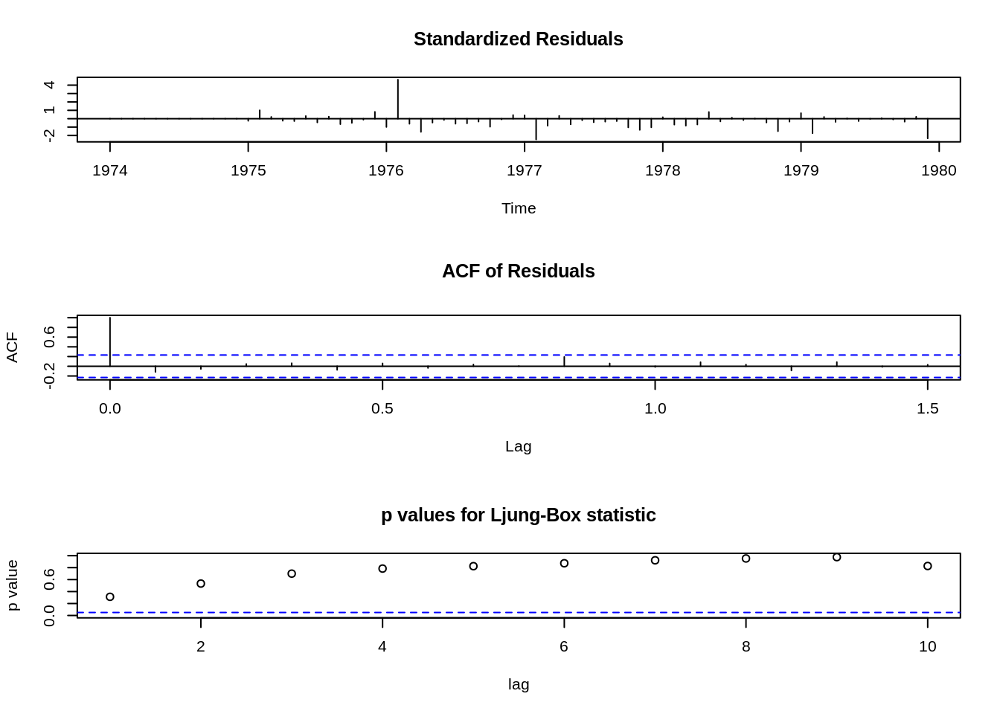
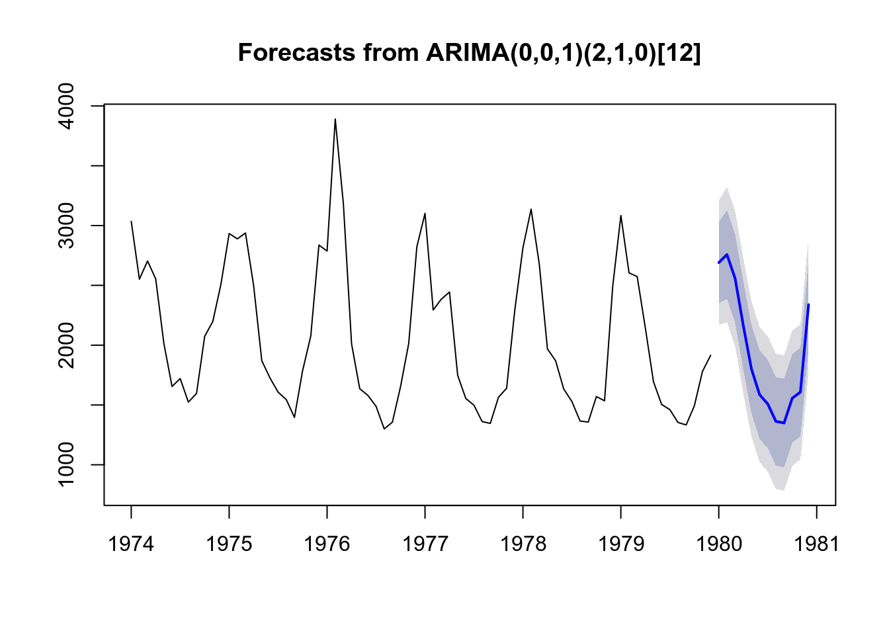

6 Análises Preditivas - Parte II
6.1 Suavização Exponencial
A suavização exponencial é uma técnica utilizada para suavizar dados de séries temporais usando um função de janela exponencial.
Enquanto na média móvel simples as observações passadas são ponderadas igualmente, as funções exponenciais são usadas para atribuir pesos exponencialmente decrescentes ao longo do tempo.
É um procedimento de fácil aplicação para fazer alguma determinação com base em suposições anteriores do usuário, como a sazonalidade.
\[s_t = \alpha x_t + (1-\alpha) s_{t-1}, t > 0\]
6.1.1 Principio básico:
As observações passadas possuem pesos;
Quanto mais recentes as observações, maiores seus pesos para as previsões;
Utiliza médias que reduzem quanto mais distantes são as observações;
O parâmetro \(\alpha\) determina o índice de redução: valor entre 0 e 1
Próximo de 0: observações antigas tem maior peso
Próximo de 1: observações recentes tem mais peso
| Intervalo | Peso |
|---|---|
| \(t-1\) | 0,5 |
| \(t-2\) | 0,2 |
| \(t-3\) | 0,07 |
| \(t-4\) | 0,01 |
| \(t-5\) | 0,005 |
6.1.2 Holt-Winters Sazonal
O método de Holt-Winters foi sugerido por Holt (1957) e Winters (1960), que trabalharam no School of Industrial Administration em Carnegie Institute of Technology.
Inclui captura de sazonalidade
Também ideal para tendência
Aditivo: para variação sazonal constante
Multiplicativo: variação sazonal não constante na série

# Aditivo - variação sazonal constante
mdl1 = hw(denguecasests,seasonal = "additive", h=16)
autoplot(mdl1) +
geom_hline(yintercept=range(0), color='black', size=0.5)
# geom_hline(yintercept=mean(denguecasests), color="red")
# Multiplicativo - Variação sazonal não constante na série
mdl2 = hw(denguecasests,seasonal = "multiplicative", h=16)
autoplot(mdl2) + geom_hline(yintercept=range(0), color='black', size=0.5)
# Comparar os modelos
plot(mdl1, main='Comparação Aditivo vs Multiplicativo')
lines(mdl2$mean, col="red")
abline(h=0, color='gray', size=1)
legend("topleft", legend=c("Adirtivo", "Multiplicativo"),
col=c("blue", "red"), lty=1:2, cex=0.8)
| meses | Aditivo | Multiplicativo |
|---|---|---|
| 2017-01-01 | 54.35271 | 81.04290 |
| 2017-02-01 | 132.91203 | 146.91063 |
| 2017-03-01 | 242.36819 | 167.38183 |
| 2017-04-01 | 141.82212 | 111.91280 |
| 2017-05-01 | 60.81116 | 75.68657 |
| 2017-06-01 | 64.82782 | 92.15411 |
| 2017-07-01 | 237.19662 | 152.17261 |
| 2017-08-01 | 232.49393 | 140.74614 |
| 2017-09-01 | 144.08363 | 75.14599 |
| 2017-10-01 | 140.68798 | 106.17806 |
| 2017-11-01 | 62.64481 | 60.06112 |
| 2017-12-01 | 220.42036 | 99.44799 |
| 2018-01-01 | 56.78732 | 42.67758 |
| 2018-02-01 | 135.34664 | 74.50686 |
| 2018-03-01 | 244.80280 | 81.35503 |
| 2018-04-01 | 144.25673 | 51.82029 |
6.2 Análise dos Resíduos
6.2.1 Pressupostos para Previsão
\(E(e_i) = 0\)
Variância \(\sigma^2\) constante (homocedasticidade);
\(e_i \sim N(0, \sigma^2)\)
Não devem estar relacionados (autocorrelação) - \(e_i \neq e_j\), são independentes
Se existe autocorrelação, existe informação nos resíduos que deveria ser utilizada na previsão
6.2.2 Comparando o ACF de ambos os modelos
par(mfrow=c(1,3))
acf(denguecasests, lag.max=20, main="Dados Original")
acf(mdl1$residuals, lag.max=20, main="Modelo Aditivo")
acf(mdl2$residuals, lag.max=20, main="Modelo Multiplicativo")
6.2.3 Executando o teste Ljung-Box
Box-Ljung testdata: denguecasests X-squared = 171.88, df = 20, p-value < 2.2e-16
Box-Ljung testdata: mdl1$residuals X-squared = 23.562, df = 20, p-value = 0.262
Box-Ljung testdata: mdl2$residuals X-squared = 24.251, df = 20, p-value = 0.2316
6.2.4 Distribuição dos Resíduos no tempo
par(mfrow=c(1,2))
plot.ts(mdl1$residuals, main="Modelo Aditivo")
abline(h=0, col="red", lty = 3)
plot.ts(mdl2$residuals, main="Modelo Multiplicativo")
abline(h=0, col="red", lty = 3)6.2.5 Normalidade dos Resíduos
par(mfrow=c(1,2))
hist(mdl1$residuals, main="Modelo Aditivo")
abline(v=0, col="darkred", lty = 2)
hist(mdl2$residuals, main="Modelo Multiplicativo")
abline(v=0, col="darkred", lty = 2)
Shapiro-Wilk normality testdata: mdl1$residuals W = 0.9786, p-value = 0.079
Shapiro-Wilk normality testdata: mdl2$residuals W = 0.86015, p-value = 1.114e-08
6.3 ARIMA
6.3.1 Arima não sazonal
Robusto: Pode ser usado em praticamente qualquer tipo de ST
Dados estáveis, com poucos outliers
Requer dados estacionários: pode ser transformada usando diferenciação: remove tendências
Subtrai a observação do período atual do período anterior
A diferenciação pode ser feita 1x: diferenciação de primeira ordem
Ou pode ser necessário uma segunda vez: diferenciação de segunda ordem (mais raro)
Termos:

AR – Autoregressivo: avalia a relação entre os períodos (lags): autocorrelação. Extrai essa influência;
I – Integrated: Aplica a diferenciação, se necessária;
MA – Moving Average: Avalia erros entre períodos e extrai estes erros (não tem relação com MA usados para suavização de st);
Exemplos:
| Parâmetro | Descrição |
|---|---|
| \(p = 1\) | Significa que uma determinada observação pode ser explicada pela observação prévia + erro |
| \(p = 2\) | Significa que uma determinada observação pode ser explicada por duas observações prévias + erro |
| \(d = 0\) | Significa que não é aplica diferenciação |
| \(d = 1\) | Significa que será aplicada diferenciação de primeira ordem |
| \(d = 2\) | Significa que será aplicada diferenciação de segunda ordem |
| \(q = 1\) | Significa que uma determinada observação pode ser explicada pelo erro da observação prévia |
| \(q = 2\) | Significa que uma determinada observação pode ser explicada pelo erro de duas observações prévias |
| ARIMA | Descrição |
|---|---|
| AR(1) ou ARIMA(1,0,0) | Apenas elemento autoregressivo , de \(1^{a}\) ordem |
| AR(2) ou ARIMA(2,0,0) | Apenas elemento autoregressivo , de \(2^{a}\) ordem |
| MA(1) ou ARIMA(0,0,1) | Apenas Média Móvel |
| ARMA(1,1) | Autorregressão e média móvel de \(1^{a}\) ordem |
6.3.2 Arima Sazonal
- Inclui, além (p,d,q), os elementos (P,D,Q), tornando o modelo mais complexo.
6.3.3 Como definir valores de p,d e q ?
p: ordem da parte autoregressiva - PACF
d: grau de diferenciação – Teste de Estacionariedade
q: ordem da média móvel - ACF
Esse processo pode ser extremamente difícil, mesmo para experientes. E Nem sempre o modelo mais sugestivo é o melhor.
6.3.4 Como saber qual o melhor modelo ?
Akaike Information Criteria (AIC e AICc)
Bayesian Information Criteria (BIC)
Outros
Ou testar todas as combinações prováveis, mas isso pode ser um pouco demorado se for feito de forma manual.
Sugestão: Usar a função auto.arima()
6.3.5 Auto.arima()
Testa diferentes combinações de p,d e r
Extremamente flexível
Mesmo intuindo um modelo, você pode usa-la para confirmar sua parametrização
Alguns parâmetros importantes da função auto.arima()
stationary - If TRUE, restricts search to stationary models.
seasonal - If FALSE, restricts search to non-seasonal models
stepwise - If TRUE, will do stepwise selection (faster). Otherwise, it searches over all models. Non-stepwise selection can be very slow, especially for seasonal models.
trace - If TRUE, the list of ARIMA models considered will be reported.
approximation - If TRUE, estimation is via conditional sums of squares and the information criteria used for model selection are approximated. The final model is still computed using maximum likelihood estimation. Approximation should be used for long time series or a high seasonal period to avoid excessive computation times.
# Utilizando trace = T, será possível verificar todo o processo de criação e teste dos modelos
modelo1 = auto.arima(denguecasests, trace = F)
kable(summary(modelo1))Series: denguecasests ARIMA(0,1,1)(0,0,1)[12]
Coefficients: ma1 sma1 -0.8234 0.3703 s.e. 0.0504 0.1004
sigma^2 estimated as 16200: log likelihood=-670.8 AIC=1347.59 AICc=1347.82 BIC=1355.61
Training set error measures: ME RMSE MAE MPE MAPE MASE Training set 0.5186493 125.4989 91.75439 -55.42405 85.13066 0.7477389 ACF1 Training set 0.02407242
| ME | RMSE | MAE | MPE | MAPE | MASE | ACF1 | |
|---|---|---|---|---|---|---|---|
| Training set | 0.5186493 | 125.4989 | 91.75439 | -55.42405 | 85.13066 | 0.7477389 | 0.0240724 |
# Neste modelo, será feito uma busca maior para uma solução "mais ótima"
modelo2 = auto.arima(denguecasests, trace = F, stepwise = F, approximation = F)
kable(summary(modelo2))Series: denguecasests ARIMA(0,1,4)(0,0,1)[12]
Coefficients: ma1 ma2 ma3 ma4 sma1 -0.7508 -0.1857 -0.1451 0.3934 0.3164 s.e. 0.0972 0.1069 0.1283 0.1094 0.1079
sigma^2 estimated as 14698: log likelihood=-664.23 AIC=1340.45 AICc=1341.29 BIC=1356.49
Training set error measures: ME RMSE MAE MPE MAPE MASE Training set -0.6774146 117.8192 85.3214 -45.61906 74.10152 0.6953141 ACF1 Training set -0.05583687
| ME | RMSE | MAE | MPE | MAPE | MASE | ACF1 | |
|---|---|---|---|---|---|---|---|
| Training set | -0.6774146 | 117.8192 | 85.3214 | -45.61906 | 74.10152 | 0.6953141 | -0.0558369 |
# Estimando as previsões
prev1 = forecast(modelo1, h=12)
autoplot(prev1) +
geom_hline(yintercept=range(0), color='black', size=0.5)
prev2 = forecast(modelo2, h=12)
autoplot(prev2) +
geom_hline(yintercept=range(0), color='black', size=0.5)
# Comparar os modelos
plot(prev1, main='Comparação Modelo 1 vs Modelo 2')
lines(prev2$mean, col="red", add=T)
abline(h=0, color='gray', size=1)
legend("topleft", legend=c("Adirtivo", "Multiplicativo"),
col=c("blue", "red"), lty=1:2, cex=0.8)| meses | Modelo_1 | Modelo_2 |
|---|---|---|
| 2017-01-01 | 91.55672 | 27.78412 |
| 2017-02-01 | 165.12106 | 133.14828 |
| 2017-03-01 | 153.66652 | 134.93483 |
| 2017-04-01 | 200.94246 | 162.30890 |
| 2017-05-01 | 156.74707 | 122.72440 |
| 2017-06-01 | 128.03768 | 95.41404 |
| 2017-07-01 | 84.62545 | 63.20041 |
| 2017-08-01 | 187.44091 | 146.33454 |
| 2017-09-01 | 71.03300 | 51.57168 |
| 2017-10-01 | 160.56290 | 127.87395 |
| 2017-11-01 | 129.26032 | 98.92913 |
| 2017-12-01 | 144.79419 | 108.31671 |
6.3.6 Comparando o ACF de ambos os modelos
par(mfrow=c(1,3))
acf(denguecasests, lag.max=20, main="Dados Original")
acf(modelo1$residuals, lag.max=20, main="Modelo 1")
acf(modelo2$residuals, lag.max=20, main="Modelo 2")
6.3.7 Executando o teste Ljung-Box
Box-Ljung testdata: denguecasests X-squared = 171.88, df = 20, p-value < 2.2e-16
Box-Ljung testdata: modelo1$residuals X-squared = 22.963, df = 20, p-value = 0.2906
Box-Ljung testdata: modelo2$residuals X-squared = 12.866, df = 20, p-value = 0.8831
6.3.8 Distribuição dos Resíduos no tempo
par(mfrow=c(1,2))
plot.ts(modelo1$residuals, main="Modelo 1")
abline(h=0, col="red", lty = 3)
plot.ts(modelo2$residuals, main="Modelo 2")
abline(h=0, col="red", lty = 3)6.3.9 Normalidade dos Resíduos
par(mfrow=c(1,2))
hist(modelo1$residuals, main="Modelo 1")
abline(v=0, col="darkred", lty = 2)
hist(modelo2$residuals, main="Modelo 2")
abline(v=0, col="darkred", lty = 2)Shapiro-Wilk normality testdata: modelo1$residuals W = 0.96905, p-value = 0.01275
Shapiro-Wilk normality testdata: modelo2$residuals W = 0.95754, p-value = 0.001654
6.4 Regressão com Séries Temporais
6.4.1 No R
tslm - Time Serie Linear Model: Estima um modelo de regressão linear adaptado para séries temporais simples ou múltipla;
Pode ser utilizado os componentes sazonalidade e tendência como variáveis independentes;
\(y \sim trend\)
\(y \sim trend + season\)
\(y \sim trend + season + x_{1} + ... + x_{k}\)
- Utilzando o baco de dados do R chamado Seatbelts
É uma série histórica que mostra os totais mensais dos condutores de automóveis na Grã-Bretanha mortos ou gravemente feridos, de 1969 a dezembro de 1984. O uso obrigatório dos cintos de segurança foi introduzido em 31 de janeiro de 1983.
| Variáveis | Descrição |
|---|---|
| DriversKilled | Motoristas de carro mortos |
| drivers | Mesmo que UKDriverDeaths |
| front | Passageiros do banco da frente mortos ou gravemente feridos |
| rear | Passageiros do banco traseiro mortos ou gravemente feridos |
| kms | Distância percorrida |
| PetroPrice | Preço da gasolina |
| VanKilled | Número de condutores de van (veículo leve de mercadorias) |
| law | A lei estava em vigor naquele mês (1/0) |
Harvey, A. C. and Durbin, J. (1986). The effects of seat belt legislation on British road casualties: A case study in structural time series modelling. Journal of the Royal Statistical Society series A, 149, 187–227. doi: 10.2307/2981553.
6.4.3 Ajustando os modelos
6.4.4 Fazendo o diagnóstico do modelo
| m1 | m2 | m3 | |
|---|---|---|---|
| CV | 583.39 | 403.58 | 309.96 |
| AIC | 1224.55 | 1153.29 | 1102.18 |
| AICc | 1224.68 | 1155.33 | 1104.55 |
| BIC | 1234.33 | 1195.63 | 1147.79 |
| AdjR2 | 0.10 | 0.41 | 0.55 |
6.4.5 Fazendo a previsão
r1 = forecast(modelo1,h=12)
r2 = forecast(modelo2,h=12)
r3 = forecast(modelo3,h=12)
autoplot(r1, main="Modelo1 = Tendência")